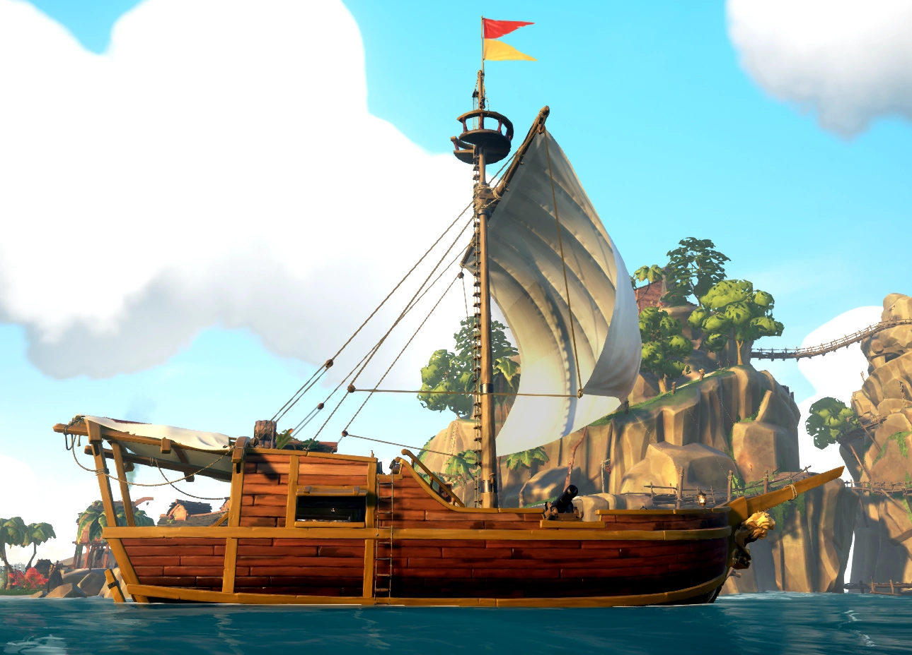
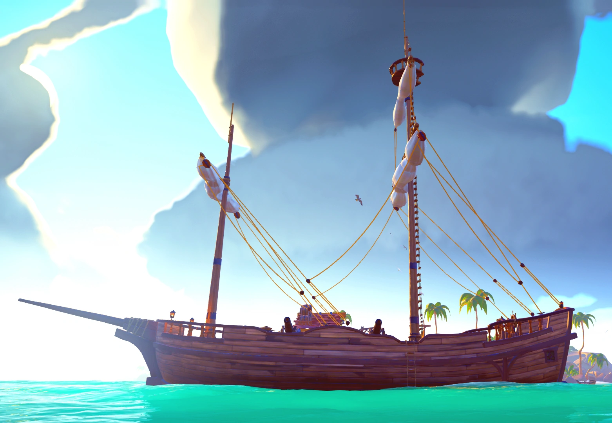
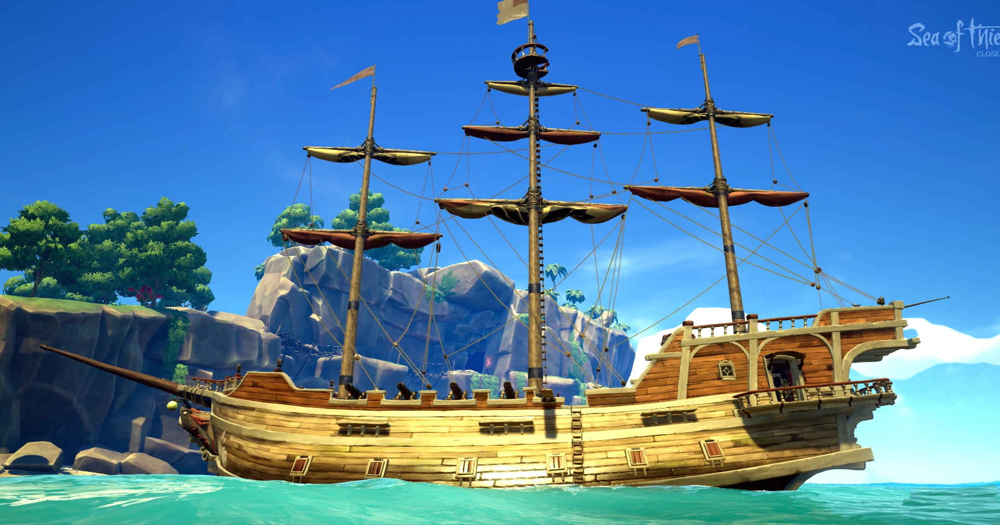

Sloop
A sloop a játékban található hajók közül a legkisebb. A fedélzeten kívül egy szintje van. Egy vagy két fő játszhat rajta. Egy árbóc, és két ágyú található rajta (minden oldalon 1). Szembeszélben a leggyorsabb hajó, hátszélben a leglassabb. A hajó legnagyobb előnye nagyobb társaival szemben az, hogy nagyon jól fordul, ennek köszönhetően jobban lehet vele manóverezni és akár Neo-t is játszhatunk a Mátrix című filmből. Óriási hátránya viszont, hogy minden oldalon csak egy ágyúja van, így közelharcban, esetleg letört árbóccal nincsen sok esélye a rajta tartózkodó játékosoknak a túlélésre.
Brigantine
A brigantine a játékban található hajók közül méret szempontjából középen helyezkedik el. A fedélzeten kívül egy szintje van. Egy vagy két fő is játszhat rajta, de három főre találták ki a hajót. Szembeszélben a második, hátszélben pedig az abszolút leggyorsabb. A hajó rendelkezik négy ágyúval (kettővel minden oldalon) és két árbóccal. A hajó legnagyobb előnye a sebessége mellyel szinte megelőzi a hangot is. Még egy nagy előnye, hogy az ágyúi még pont optimális magasságban vannak, szóval nem nagy a vertikális holttér ebből a szempontból. Fordulékonysága közepesen jó, de könnyen lehet vele trükközni.
Galleon
A galleon a játékban található közül a legnagyobb. A hajón egy embertől négy emberig akárhányan lehet játszani, viszont négy főnél kisebb csapatnak semiképpen sem ajánlott, hiszen ennek a hajónak az irányításához, javításához sok ember kell. A fedélzeten kívűl egy kapitányszobája és két szintje van. A hajó három árbóccal és 8 ágyúval rendelkezik (oldalonként néggyel). A hajó nagy előnye hogy négy fős a legénysége, és ez a négy fő egy oldalon egyszerre tud tüzelni is. Nagy hátránya viszont tömzsisége, ami miatt könnyen zátonyra futhat, és rendkívül lassan fordul. A hajó középső szintje miatt rendkívül csalóka és ha nem figyelnek a játékosok eléggé, pillanatok alatt elsülyedhet a hajó.